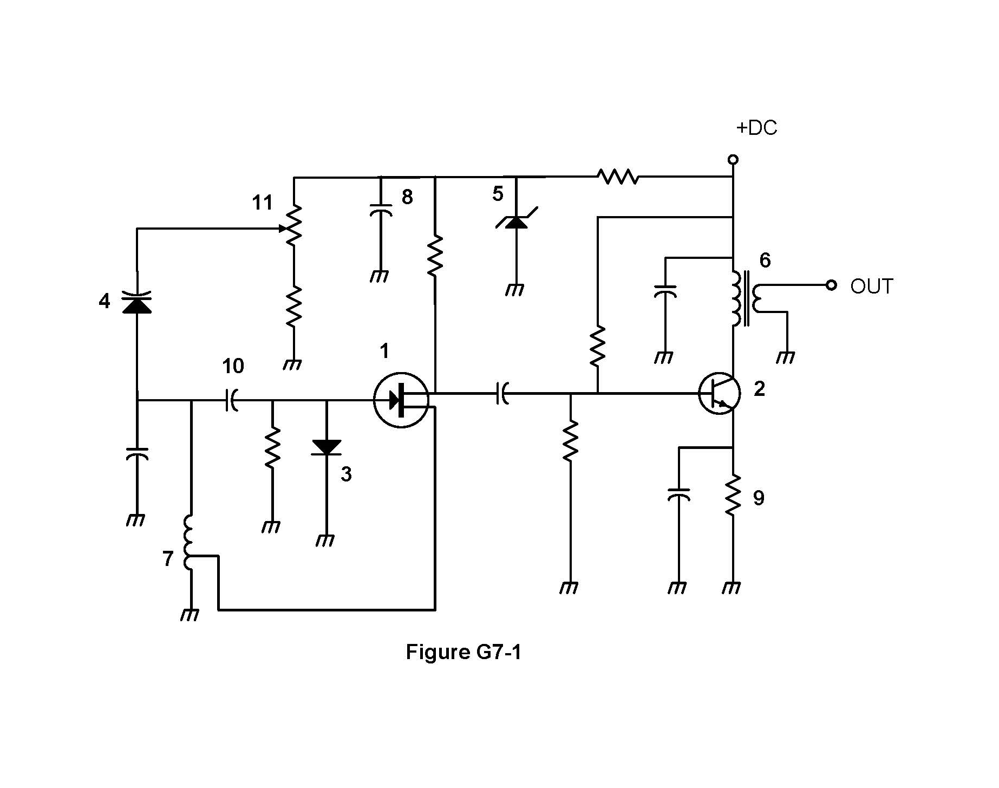

// general · subelement G7
Practical Circuits
T7 asked "what block does this job." G7 opens the blocks up: how a power supply actually turns wall AC into clean DC, and how to read the schematic symbols that show it (G7A); basic digital logic plus the amplifier classes and oscillators that do the RF heavy lifting (G7B); and how a modern transceiver is actually built — balanced modulators, filters, and the software-defined techniques increasingly replacing dedicated hardware stages (G7C).
G7A
Power supplies & schematic symbols
T6D already named a rectifier (converts AC to pulsating DC) and a voltage regulator (holds output steady). G7A strings those into a full power-supply block diagram: AC input → transformer (steps the AC voltage up or down) → rectifier (converts it to pulsating DC) → filter (smooths the pulses into steady DC) → regulator (holds that DC output rock-steady despite load changes) → DC output. The filter stage is built from capacitors and inductors working together — the capacitor stores charge to fill in the gaps between pulses, the inductor resists sudden current changes, and between them the ripple gets smoothed way down.
One more component sits quietly across the output: a bleeder resistor. Its job is a safety one — it discharges the filter capacitors once power is removed, so a supply that's been unplugged for a minute doesn't still have a capacitor sitting there charged to a dangerous voltage waiting for someone's fingers.
Rectifier types
Not every rectifier looks the same. A half-wave rectifier uses just a single diode, and by definition only lets one half of the AC cycle through — it converts 180 degrees of each AC cycle to DC and simply throws the other half away. A full-wave rectifier uses two diodes fed from a center-tapped transformer, one diode handling each half of the cycle, so it converts the full 360 degrees of the AC cycle to DC — nothing gets thrown away. (A full-wave bridge rectifier reaches the same 360-degree result a different way, using four diodes and no center tap at all.)
A newer alternative to this whole linear approach is the switchmode power supply: instead of running a big, heavy 60 Hz transformer, it switches the incoming power on and off at a much higher frequency — tens or hundreds of kilohertz — before transforming and rectifying it. The main characteristic that sets it apart from a linear supply is exactly that high-frequency operation, since it's what allows the use of smaller components: a transformer that only has to handle a 100 kHz signal can be a fraction of the size and weight of one built for 60 Hz. That's why switchmode supplies dominate anywhere size and weight matter — laptop chargers, mobile radio power supplies, and so on.

A two-stage RF amplifier: an FET first stage feeds an NPN transistor second stage, coupled by a capacitor, with the output taken through a transformer.
This is a real amateur exam schematic, and five of its symbols are asked about directly:
- Symbol 1 is a field effect transistor (FET) — the circle with a gate lead approaching a bar, and drain/source leads coming off it. It's the amplifying device of the circuit's first stage.
- Symbol 2 is an NPN junction transistor — the circled symbol with an arrow on the emitter lead pointing away from the base, forming the second amplifying stage.
- Symbol 5 is a Zener diode — a diode symbol with the bent "Z"-shaped bar, used here to hold a bias voltage steady rather than to rectify anything.
- Symbol 6 is a solid core transformer — the paired-coil symbol at the far right, labeled OUT, that couples the amplified RF out of the circuit.
- Symbol 7 is a tapped inductor — a coil with an extra lead branching off partway along its winding, at the bottom left of the circuit.
The rest of the figure is ordinary supporting circuitry, not individually tested: symbols 3 and 4 are diodes in the bias network, 8 and 9 are bypass capacitors (and a bypass resistor) that keep RF off the DC supply lines, 10 is the coupling capacitor passing signal from the FET stage into the transistor stage, and 11 is a potentiometer used to adjust the FET's gate bias.
Covers G7A01–G7A13 (13 exam questions)
Loading…
G7B
Digital circuits, amplifiers & oscillators
Two topics share this group, and they aren't as related as they might look at first: the basic building blocks of digital logic, and the analog amplifier/oscillator stages that actually generate and boost RF.
Digital circuits
A logic gate is a circuit whose output depends only on the combination of high/low ("1"/"0") states at its inputs. The one the pool asks about directly is the two-input AND gate: its output reads high only when both inputs are high — any other combination (either input low, or both low) produces a low output. A shift register is a different kind of digital building block: a clocked array of circuits that passes data along in steps, one position per clock pulse — the digital equivalent of a bucket brigade, moving one bit's worth of data down the line each tick.
Amplifier classes
Amplifiers get sorted into classes by how much of the input cycle the amplifying device actually conducts current for — and that one design choice trades off linearity against efficiency:
The device conducts 100% of the time — the full input cycle, every cycle. Most linear (cleanest reproduction of the input waveform), least efficient of the common classes.
The device conducts for well under half the cycle. Among Class A, B, AB, and C, it's the highest-efficiency design — but that efficiency comes at the cost of badly distorting the input waveform.
That distortion is exactly why Class C matters for mode selection: it's only appropriate for amplifying a modulated signal when the mode being amplified is FM, since FM's information rides in the signal's frequency, not its amplitude, so distorting the amplitude envelope doesn't hurt anything. SSB and AM both carry their information as amplitude variations, so amplifying either one through a Class C stage would mangle the very thing being transmitted — they need a linear amplifier: one whose output preserves the shape of the input waveform, at whatever cost to efficiency that preservation requires.
Two more amplifier facts round the group out. Neutralizing an amplifier means adding a small feedback path specifically designed to cancel unwanted internal feedback within the stage — its purpose is to eliminate self-oscillation, keeping an amplifier from turning itself into an accidental oscillator. And a sine wave oscillator, at its core, is nothing more than a filter and an amplifier wired in a feedback loop — the filter selects one frequency to resonate at, and the amplifier keeps replenishing the energy that resonance loses each cycle, keeping the oscillation going indefinitely instead of dying out. Where an LC oscillator lands on the dial is set entirely by that filter's tank circuit: the specific inductance and capacitance values determine the oscillator's frequency.
Covers G7B01–G7B11 (11 exam questions)
Loading…
G7C
Transceiver design, filters & DSP
G8A explains SSB conceptually as "AM with the carrier and one sideband removed." G7C is the circuit that actually does that removal:
Receiving SSB runs a mirror-image process. A product detector is the stage that does it: it's used in an SSB receiver specifically to extract the modulated audio back out of the incoming RF, the demodulation counterpart to the transmitter's balanced modulator.
One more transmitter-output detail: an impedance-matching transformer at a transmitter's output exists to present the desired impedance to both the transmitter and the feed line — getting that match right is what lets the transmitter deliver its full rated power into the line instead of fighting a mismatch.
Synthesis & software-defined radio
A direct digital synthesizer (DDS) generates a variable output frequency digitally, but with the frequency stability of a crystal oscillator — it's how a modern radio's VFO can tune smoothly and continuously across a band while still holding rock-solid on whatever frequency you land on, without needing a separate crystal for every possible frequency.
A software-defined radio (SDR) pushes that same idea further: it does functions in software — filtering, detection, and modulation among them — that older radios did in dedicated hardware stages. The technique that makes this possible is I/Q modulation: SDR equipment works with a pair of signals, "I" and "Q," held at a fixed 90-degree phase difference from each other. Having both the amplitude and phase information that pair encodes is what gives an SDR its real advantage — any type of modulation can be created (or decoded) purely through processing that I/Q pair, without needing different dedicated hardware for AM versus FM versus SSB versus a digital mode.
Filter vocabulary
G7C also tests a specific, precise vocabulary for describing filters — the same low-pass, high-pass, band-pass, and notch (band-reject) types already at work throughout a transceiver, from T7B's interference fixes to the sideband filter above:
- Insertion loss is a filter's attenuation inside its passband — the small amount of signal a filter costs you even at frequencies it's supposed to pass through cleanly.
- Cutoff frequency, for a low-pass filter, is the frequency above which output power drops below half the input power — the standard "half-power" (3 dB) point marking where the filter's rolloff really starts to bite.
- Ultimate rejection is a filter's maximum ability to reject signals outside its passband — how good the filter is at its actual job, at the frequencies it's supposed to be blocking.
- A band-pass filter's bandwidth is measured between its upper and lower half-power points — the same half-power idea as cutoff frequency, just applied at both edges of a passband that sits in the middle of the spectrum instead of at one end.
One advantage of doing filtering with digital signal processing (DSP) rather than analog components: a DSP filter can create a far wider range of filter bandwidths and shapes than a fixed analog circuit built from a specific set of physical parts — changing a DSP filter's response is a matter of changing numbers in software, not swapping capacitors and inductors on a board.
Finally, receiver sensitivity — how weak a signal a receiver can still pull out of the noise — isn't set by any single stage. Input amplifier gain, demodulator stage bandwidth, and input amplifier noise figure (a measure of how much extra noise a stage itself adds on top of the signal passing through it) all affect it together, which is exactly why chasing sensitivity means looking at the whole receive chain, not just one component.
Covers G7C01–G7C14 (14 exam questions)
Loading…